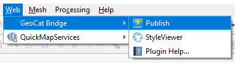
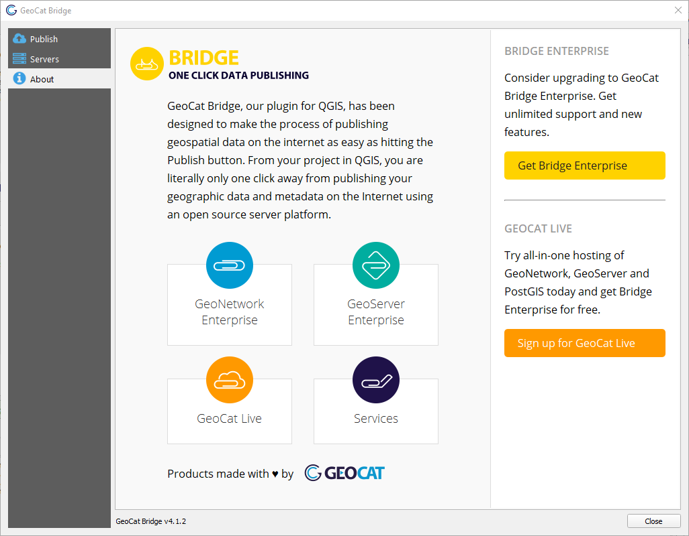

The Bridge Dialog¶
Most of the interaction with GeoCat Bridge is done through the Bridge dialog. To open it, select the Publish button on the Web toolbar or look for it under the Web/GeoCat Bridge menu.
The first time you open the Bridge dialog, you will see a landing page with information about Bridge and other GeoCat products. Follow the corresponding links to find out more about these products and how they can be used with Bridge.
Tip
At the bottom of the About panel, it should display the GeoCat Bridge version that you are currently running.
As you can see, there are 2 more panels besides the About panel mentioned above:
Publish
Servers
We will have closer look at these panels on the following pages.
Tip
If you are experiencing unexpected behavior, you should open the GeoCat Bridge log message panel to find out if Bridge has been logging some errors or warnings.
This panel can be opened by clicking the “balloon” button in the lower-right corner of QGIS
or by checking the View > Panels > Log Messages item from the QGIS menu bar.